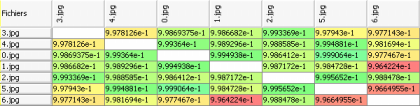

Résultats
Lorsque que la première partie de l'analyse est terminé et que les 3 panneaux sont affichés, vous pouvez réaliser une première analyse des résultats.

Sur la droite, la matrice des distances indique par des couleurs la probabilité d'avoir affaire à un plagiat :
- Vert : Tout va bien
- Jaune : Il s'agit surrement d'une erreur
- Orange : Il y a un un risque, mais il est faible
- Rouge : Il y a un plagiat potentiel
Lorsque la deuxième partie de l'analyse est terminé, un nouveau bouton apparait dans la fenêtre centrale.
Celui-ci permet de passer de la vue 2D (histogramme :  ) à la vue 3D (nuage de points :
) à la vue 3D (nuage de points :  ).
).
Cette dernière vue peut être utile car elle donne une idée des distances relatives entre chaque points.
Lorsque la vue 3D est sélectionnée, il est possible d'afficher ou masquer les étiquettes contenant les noms de fichiers via un second bouton .
La liste déroulante permet de sélectionner un fichier afin de faire resortir de le point qui lui correspond dans le nuage (on peut l'utiliser directement, avec la molette de la souris, ou encore utiliser les flèches sur le côtés).